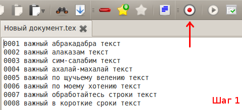
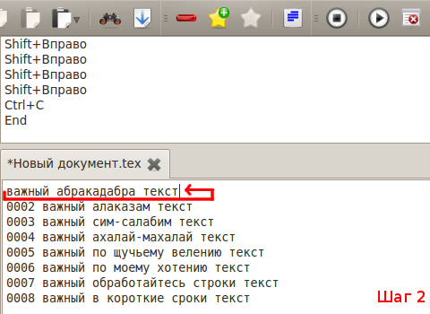
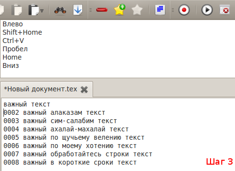
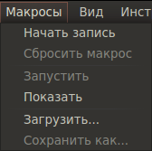

[Назад: 3.1. Основной документ и закладки]
[Далее: 3.3. Прочее]
Макросы
Система макросов позволяет записать последовательность нажатий клавиш, а затем воспроизвести эту последовательность.
Это может оказаться крайне полезно в случаях, когда нужно обработать много участков текста, имеющих схожую структуру.
Рассмотрим пример. Допустим, требуется в строчках вида
"000x нужный лишний текст текст"
удалить номера в начале строки и лишний текст, оставив лишь выделенный нужный текст.
Для одной строчки это не составило бы особого труда, но что если требуется обработать сотню таких строчек?
Как раз для этого и удобно использовать макросы.
Вы ставите курсор в начало первой обрабатываемой строки, начинаете запись макроса:

выполняете необходимые действия:

а затем переводите курсор на следующею строку и останавливаете запись макроса:

Теперь, когда последовательность действий записана, достаточно лишь запускать макрос для каждой обрабатываемой строки,
нажимая соответствующую кнопку.
Важно: если количество символов в обрабатываемых строках отличается, то необходимо учитывать это при записи
макросов и использовать вместо передвижения курсора при помощи стрелок клавиши Home и End. Кроме того,
важно понимать, что при записи макроса запоминаются именно нажатия клавиш, а не сами действия с текстом, поэтому
использование мыши при записи макросов приведет к неправильным результатам. Используйте только клавиатуру.
Запись
Чтобы начать запись макроса, воспользуйтесь пунктом Начать запись меню Макросы:

либо нажмите соответствующую кнопку на панели инструментов:

При начале записи автоматически открывается так называемая консоль макросов. В ней отображаются записанные действия.
Чтобы спрятать или показать консоль, воспользуйтесь пунктами Скрыть и Показать меню Макросы,
либо нажмите соответствующую кнопку на панели инструментов:


Чтобы закончить запись макроса, воспользуйтесь пунктом Остановить запись меню Макросы, либо нажмите
соответствующую кнопку на панели инструментов:

Сохранение и загрузка
Записанный макрос можно сохранить в файл, чтобы в будущем использовать его снова.
Чтобы сохранить макрос, воспользуйтесь пунктом Сохранить как... меню Макросы и в открывшемся диалоге
введите желаемое имя файла.
Чтобы загрузить ранее сохраненный макрос, воспользуйтесь пунктом Загрузить меню Макросы и в открывшемся
диалоге выберите нужный файл макроса.
Использование
Для того, чтобы запустить записанный макрос, воспользуйтесь пунктом Запустить меню Макросы, либо нажмите
соответствующую кнопку на панели инструментов:

Чтобы сбросить последний записанный макрос, воспользуйтесь пунктом Сбросить макрос меню Макросы.
Это действие нельзя отменить, однако оно не удаляет соответствующий файл, если макрос был загружен из файла.
Сброс макроса может потребоваться лишь в том случае, если вы опасаетесь случайно запустить его выполнение.
При загрузке макроса из файла или начале записи нового макроса старый макрос сбрасывается автоматически.
[Назад: 3.1. Основной документ и закладки]
[Далее: 3.3. Прочее]